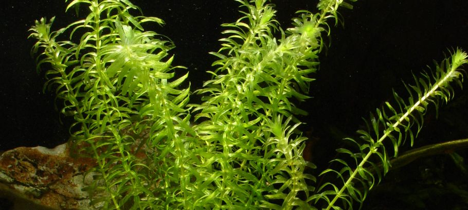

El helecho de Java es una planta helófita que procede de Asia. En la naturaleza, el Microsorum pteropus crece en arroyos y cascadas, principalmente sobre rocas o pegada a la madera. El helecho tiene una enorme capacidad de adaptación. En función de la ubicación, puede crecer permanentemente bajo el agua o en tierra, sobre suelo boscoso húmedo. Las hojas del helecho de Java son alargadas y se van estrechando hasta terminar en punta. Además, tiene la raigambre de color entre marrón oscuro y negro.
Musgo de Java
El musgo de Java, Vesicularia dubyana, es una planta acuática de agua dulce originaria de los países del sudeste asiático, incluyendo la Isla de Java, que le ha dado su nombre. Es muy comúnmente utilizada en acuarios de agua dulce, aunque también puede ser utilizada en acuarios de agua salobre. El nombre "musgo de Java" se usa para otras especies de musgo usadas en acuariofilia que no son V. dubyana, como Taxiphyllum barbieri y otras especies de ambos géneros.
Las especies vendidas bajo el nombre de "musgo de Java" comparten ciertas características. Carecen de raíz, pero pueden adherirse con facilidad a muchas superficies incluyendo trocos, rocas, grava e incluso vidrio y equipo eléctrico dentro del acuario. Son fáciles de cuidar ya que no necesita de grava, fertilizantes ni luces intensas y es tolerante respecto al pH y a la dureza del agua. Estas características, aunadas al hecho de que la planta es estéticamente placentera, han hecho del musgo de Java una planta popular entre los acuaristas.
Cola de Zorro
La planta acuática Ceratophyllum Demersum o también llamada Cola de Zorro, es una planta muy sencilla que hará las delicias de tus peces.
Es la planta más sencilla y de más rápido crecimiento que puedes introducir en tu acuario.
Es muy recomendable para todos aquellos que comenzáis en este maravilloso mundo de la acuariofilia o el aquascaping.
En cuanto a su aspecto general es una planta de tonalidad verde y de hoja áspera.
Elodea

La elodea no es un alga, aunque se suele considerar como tal incorrectamente. De hecho, se trata de una planta acuática útil para acuarios y estanques. Proporciona una mejor calidad del agua, como, por ejemplo, el cerastio. Es un elemento de verdor precioso para el acuario y ofrece cobijo a sus nuevos habitantes. Además, es muy robusta y fácil de cuidar, y constituye la base de un equilibrio natural en el acuario